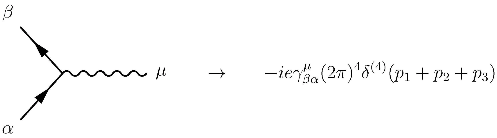

Le Cabinet-Conseil de Québec.IA
Une intelligence artificielle tangible et décisive
Considérant que les meilleurs talents en IA sont rares, Québec.IA offre un service de consultation.
“ Nous voulons voir une interopérabilité matricielle, des opportunités d’apprentissage, ainsi que le développement de ‘Chief AI Officers‘ possédant les compétences nécessaires pour orchestrer des avancées décisives et une croissance économique tangible pour les Fortune 500, les gouvernements et les partenaires institutionnels.“
Québec.IA : Les meilleurs conseillers en IA au Québec
Québec.IA relève les défis les plus difficiles.

Réunissant des contributions de chercheurs et de praticiens reconnus comme étant les principales autorités dans leur domaine, le Cabinet-Conseil de Québec.IA offre une intelligence artificielle pratique et très puissante.
L’Atelier Québec.IA: Développement d’algorithmes sur mesure
L’Atelier Québec.IA crée et déploie des modèles d’IA haut de gamme et des systèmes d’IA à part entière.
“Une percée en apprentissage automatique vaudrait 10 fois Microsoft.“ — Bill Gates
Montréal.IA Aérospatial
Aérospatial + IA : Une nouvelle ère globale de prouesses techniques
, président-fondateur de Québec.IA")
Montréal.IA Aérospatial s’appuie sur l’ingénierie aérospatiale, l’intelligence artificielle appliquée et la recherche en astrophysique pour optimiser les vols spatiaux, l’efficacité des satellites et l’exploration spatiale.
“Reconnaissant que Montréal est un pôle mondial de l’industrie aérospatiale et un chef de file en intelligence artificielle, nous avons constitué Montréal.IA Aérospatial.“ — Vincent Boucher, B. Sc. Physique, M.A. Analyse des politiques gouvernementales et M. Sc. Génie aérospatial (technologie spatiale), président-fondateur de Québec.IA

Blockchain et intelligence artificielle chez Québec.IA
“…il n’y a pas de discrimination entre les robots ou les humains dans l’écosystème Ethereum…“ — Fondation Ethereum
AI + Ethereum = vie artificielle
- Déploiement d’efficaces agents IA sur Blockchain;
- Développement de multi-agents DAO;
- Engendrement de la vie artificielle sur Blockchain.
Québec.IA DAO:
Plateforme agnostique pour le développement d’organisations autonomes décentralisées (entreprises, organisations gouvernementales, instituts, …) + Une boîte à outils pour y déployer l’IA.
Chief AI Officers : Formation en IA pour les cadres
Une formation s’appuyant sur plus d’un million de dollars (1 000 000 $) en recherche sur l’IA
‘Chief AI Officers’ : Une formation en IA pour les cadres qui maximise les principes fondamentaux de l’intelligence artificielle à un niveau supérieur. Elle incite les décideurs à les mettre en pratique de manière stratégique dans les entreprises, les gouvernements et les institutions avec une ingénierie de précision.

“Dans un moment de bouleversement technologique, le leadership compte.“ — Andrew Ng
Le succès consiste à façonner activement le jeu qui compte pour vous. Cette formation professionnelle, au niveau décisionnel, est exclusive et a été conçue pour atteindre une compréhension pointue des stratégies en intelligence artificielle transformatrice, donnant ainsi de nouvelles perspectives aux organisations étatiques, nationales et internationales.
Profil des participants
“Nous voulons voir une interopérabilité matricielle plus étendue, des opportunités d’apprentissage individuel et permanent, ainsi que le développement de Chief AI Officers possédant les connaissances, les compétences et les outils nécessaires pour orchestrer des avancées décisives et une croissance économique tangible pour les Fortune 500, les gouvernements et les partenaires institutionnels et ce, en harmonie avec le ‘Québec AI-First Conglomerate Overarching Program’.“ — Vincent Boucher, Président et fondateur de Québec.IA, B. Sc. Physique, M.A. Analyse des politiques gouvernementales et M. Sc. Génie aérospatial (technologie spatiale)
‘Chief AI Officers’ : Formation en IA pour les cadres a été élaborée pour des:
- Membres de conseil d’administration;
- Capitaines d’industrie;
- Chanceliers;
- Directeurs généraux;
- Commandants;
- Excellences;
- Titulaires de chaires;
- Cadres à haut potentiel;
- Entrepreneurs iconiques en technologie;
- Intellectuels;
- Directeurs marketing;
- Influenceurs;
- Philanthropes;
- Présidents;
- Boursiers;
- Entrepreneurs et financiers prospères;
- Fondateurs visionnaires
… qui souhaitent exalter de manière stratégique le pouvoir de l’intelligence artificielle à une échelle véritablement mondiale.
Rejoignez-nous — Une opportunité unique dans une vie
QUÉBEC.IA | Intelligence Artificielle Québec s’efforce de réunir les meilleurs experts en apprentissage profond, capitaines d’industrie et les dirigeants chevronnés du secteur afin de constituer une équipe de consultants en intelligence artificielle décisive, prééminente et reconnue.
Pour postuler afin de faire partie de notre groupe de consultants exceptionnels: rh@montreal.ai
Références
“L’année dernière, le coût d’un expert en apprentissage profond « deep learning » de classe mondiale était à peu près le même que celui d’un joueur quart-arrière de la NFL. Le coût de ce talent est assez remarquable.“ — Peter Lee, Microsoft
- Million-dollar babies — The Economist
- The Battle for Top AI Talent Only Gets Tougher From Here — Wired
- The Tech Oligopoly — Part 1 | The New Kingmakers — Arif Khan
- Oracle recently offered an artificial intelligent expert as much as $6 million in total pay as Silicon Valley’s talent war heats up — The Economist
- A.I. Researchers Are Making More Than $1 Million, Even at a Nonprofit — The New York Times

“C’est le printemps pour l’IA et nous anticipons un long été.“ — Bill Braun, CIO de Chevron
✉️ Courriel : info@quebec.ai
üìû T√©l√©phone : +1.514.829.8269
üåê Site web : http://www.quebec.ai/
üìù LinkedIn : https://www.linkedin.com/in/montrealai/
üèõ Secr√©tariat G√©n√©ral de Qu√©bec.IA : 350, RUE PRINCE-ARTHUR OUEST, SUITE #2105, MONTR√âAL [QC], CANADA, H2X 3R4 *Conseil ex√©cutif et bureau administratif
#IntelligenceArtificielle #IntelligenceArtificielleQuebec #QuebecIA